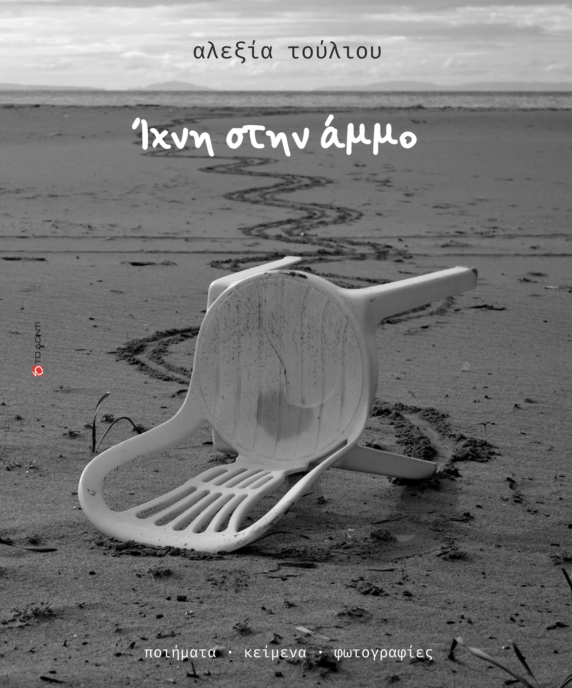
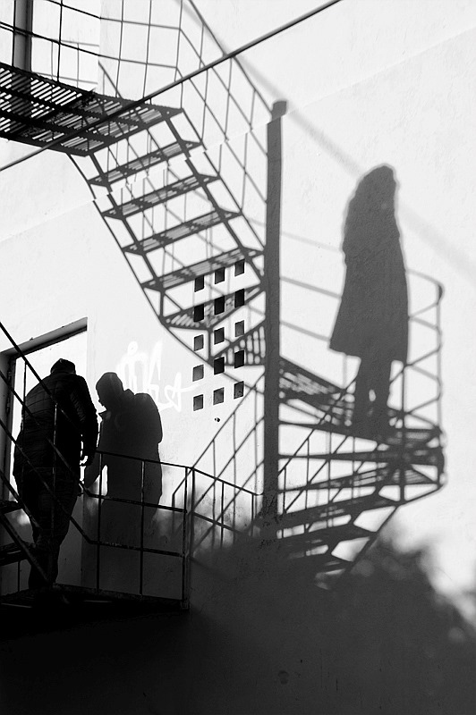
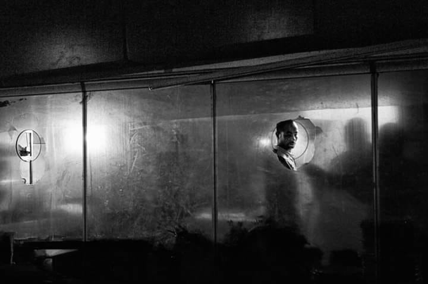
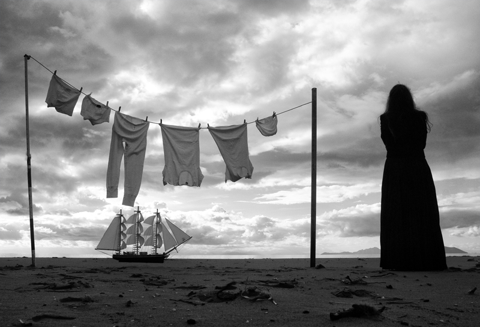
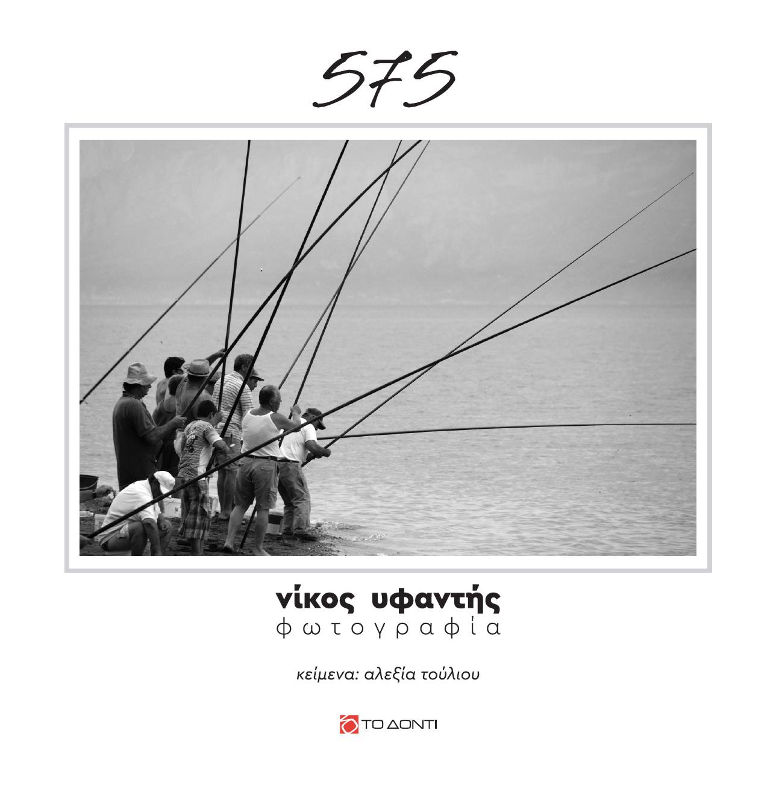
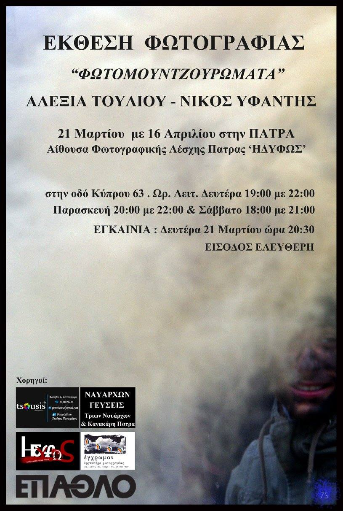
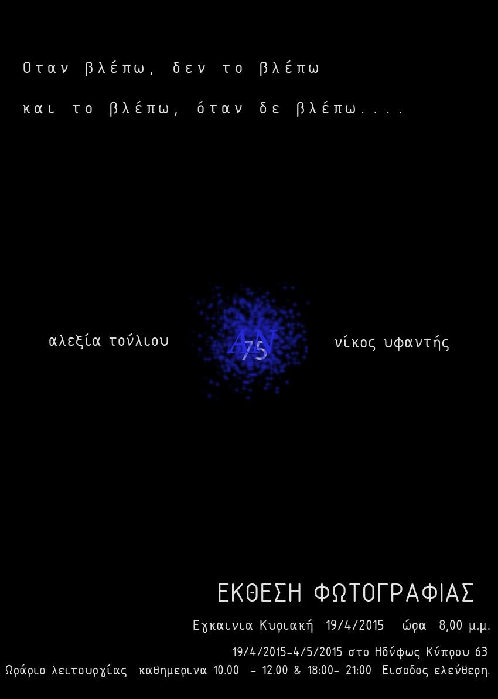
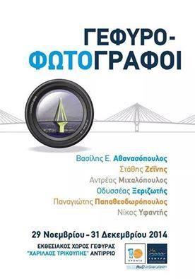

Η παρουσίαση του βιβλίου «Ίχνη στην άμμο» έγινε την:
Τετάρτη 17 Ιανουαρίου 2024 στον χώρο «Το Χασομέρι» (Παπαδιαμαντοπούλου 10, Πάτρα)
Η εκδήλωση ήταν φόρος τιμής στην Αλεξία Τούλιου, όπου παρουσιάστηκε το λεύκωμα με φωτογραφίες, ποιήματα και κείμενα της , τρία χρόνια μετά την απρόσμενη απώλειά της.
Το πρόγραμμα περιλάμβανε:
Παρουσίαση του βιβλίου από τον Νίκο Υφαντή, την Θάλεια Νουάρου, την Μαρία Κοσσυφίδου και τον Διονύση Καραντζά
Προβολή φωτογραφιών της Αλεξίας.
Μουσική υπόκρουση από τους CB RA GALO με jazz‑funk sound μετά την εκδήλωση
Το βιβλίο κυκλοφορεί από τις εκδόσεις «Το Δόντι» – διαθέσιμο μέσω του βιβλιοπωλείου «Το Δόντι», «Πρωτοπορία» και άλλων επιλεγμένων σημείων. Αλλά και στο διαδίκτυο στην παρακάτω διεύθυνση. Ίχνη στην άμμο – Εκδόσεις Το Δόντι
📅 17 Ιανουαρίου 2024

Δύο φωτογραφίες του Νικου Υφαντή επιλέχθηκαν και τον κατεταξαν στη πρωτη θεση σε ισοβαθμία με άλλους δυο φωτογράφους στο διαγωνισμό φωτογραφίας του φεστιβάλ PHOS ATHENS 2019 που ειναι αφιερωμενο στη ΦΩΤΟΓΡΑΦΙΑ ΔΡΟΜΟΥ.
Οι φωτογραφίες συμμετείχαν και στην έκθεση που πραγματοποιήθηκε στα πλαίσια του φεστιβαλ των 20 καλύτερων φωτογραφιων.
📅 17 Νοεμβρίου 2019

Στον παννελλήνιο διαγωνισμό φωτογραφίας του Metapolis Από 7899 Φωτογραφίες και 692 Φωτογράφους Τρίτη θέση για την φωτογραφία μου.
Ευχαριστώ την επιτροπή του metapolis για την επιλογή.
ΑΠΟΤΕΛΕΣΜΑΤΑ
📅 4 Οκτωβρίου 2019

Παρουσίαση Φωτογραφικού Λευκώματος με τίτλο: ''575''
Η παρουσίαση του πρώτου φωτογραφικού λευκώματος «575» από τις εκδόσεις ''Το Δόντι'' με φωτογραφίες του Νίκου Υφαντή και κείμενα της Αλεξίας Τούλιου στην Πάτρα έγινε με επιτυχία την Παρασκευή 17 Νοεμβρίου 2017 στο μπαρ-καφέ «Ο Ακροβάτης στην Πλατεία» στην Πάτρα(πλατεία Καποδιστρίου, Μαρκάτου). Τη βραδιά προλόγισε ο αρχιτέκτονας & φωτογράφος Άρης Ζησιμάτος
📅 17 Νοεμβρίου 2017

Η φωτογραφική έκθεση με θέμα «Φωτομουντζουρώματα στο Γαλαξίδι», των Νίκου Υφαντή και Αλεξίας Τούλιου, πραγματοποιήθηκε:
από Παρασκευή 11 Μαρτίου έως Καθαρά Δευτέρα 14 Μαρτίου 2016 στην Αίθουσα Παρθεναγωγείου, οδός Ν. Γουργουρή, Γαλαξίδι, υπό την αιγίδα του Δήμου Δελφών . Η έκθεση είχε έντονο αποκριάτικο χαρακτήρα, καθώς παρουσίαζε τη δική τους -καλλιτεχνική- οπτική για το παραδοσιακό έθιμο των Αλευρομουντζουρωμάτων που λαμβάνει χώρα στο Γαλαξίδι την Καθαρά Δευτέρα.
Η είσοδος ήταν ελεύθερη και η επισκεψιμότητα πολύ μεγάλη καθώς η έκθεση πραγματοποιήθηκε παράλληλα με το έθιμο.
📅 11 Μαρτίου 2016

Η έκθεση φωτογραφίας με θέμα «Τα όνειρα», των Νίκου Υφαντή και Αλεξίας Τούλιου, διοργανώθηκε από τη Φωτογραφική Λέσχη Πάτρας «Ηδύφως», και πραγματοποιήθηκε:
Από 19 Απριλίου έως 4 Μαΐου 2015
Στην Πάτρα, στην αίθουσα της φωτογραφικής λέσχης «Ηδύφως» στην οδό Κύπρου 63
Η έκθεση είχε τον τίτλο:
«Όταν βλέπω, δεν το βλέπω και το βλέπω όταν δεν βλέπω…»
Ήταν κοινή έκθεση των φωτογράφων και μελών της λέσχης Νίκου Υφαντή και Αλεξίας Τούλιου.
📅 19 Απριλίου 2015

Ο Νίκος Υφαντής βραβεύθηκε το 2014 από την εταιρεία Γέφυρα Α.Ε., η οποία διαχειρίζεται τη Γέφυρα Ρίου–Αντιρρίου «Χαρίλαος Τρικούπης», μαζί με άλλους πέντε φωτογράφους.
Το βραβείο απονεμήθηκε για τη φωτογραφική δουλειά του σχετικά με τη γέφυρα Ρίου–Αντιρρίου και ανήκει στις τιμητικές αναγνωρίσεις που απένειμε η Γέφυρα Α.Ε. σε φωτογράφους που ανέδειξαν το μνημείο μέσα από τη φωτογραφική τέχνη.
Η έκθεση – βράβευση με τίτλο «Γεφυρο-Φωτογράφοι» πραγματοποιήθηκε στον Εκθεσιακό Χώρο της Γέφυρας «Χαρίλαος Τρικούπης» στο Αντίρριο από 29 Νοεμβρίου έως 31 Δεκεμβρίου 2014.
📅 29/10/2014

Σήμερα από την λέσχη φωτογραφίας ''ΗΔΥΦΩΣ'' ξεκίνησε για πρώτη φορά στην πόλη μας ένα φεστιβάλ φωτογραφίας που έγινε θεσμός τα επόμενα χρόνια έως και τα δύσκολα χρόνια του covid.. Ένα φεστιβάλ που κάθε χρονο φιλοξενούσε σπουδαίες φωτογραφικές εκθέσεις και εκδηλώσεις με αποκορύφωμα τον Φωτομαραθώνειο Πάτρας.